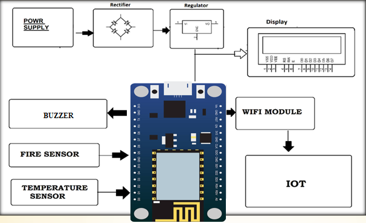
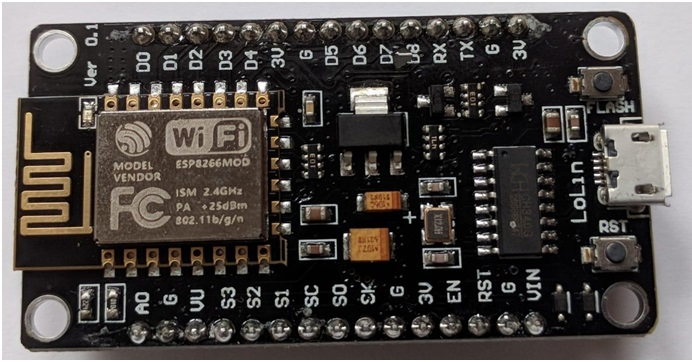
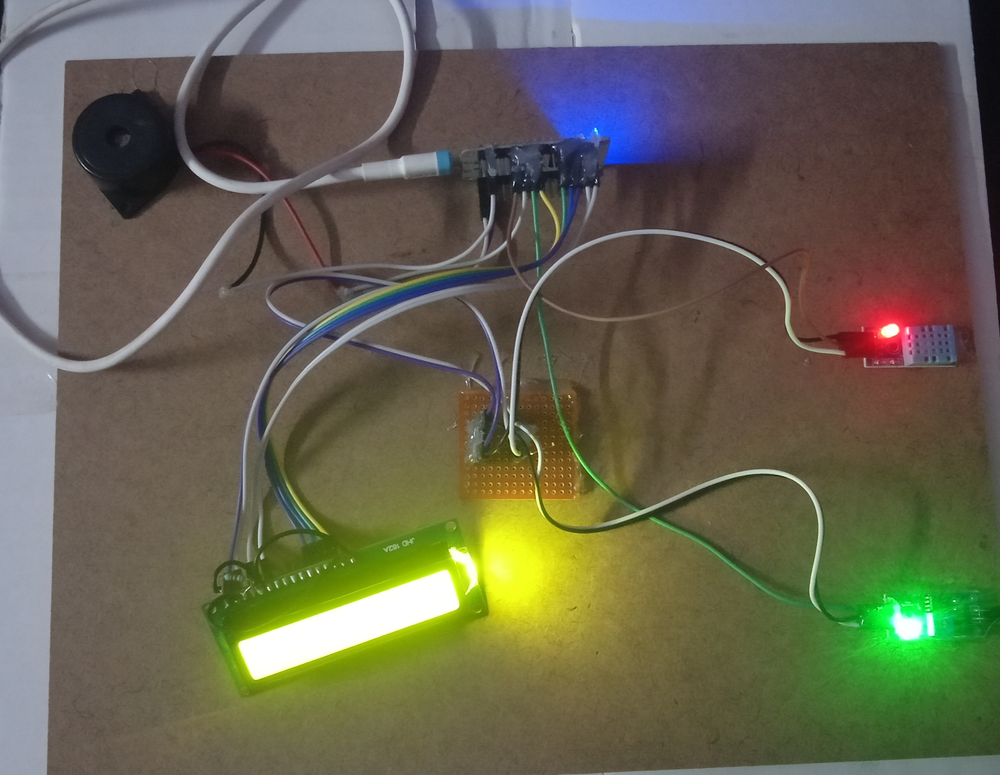
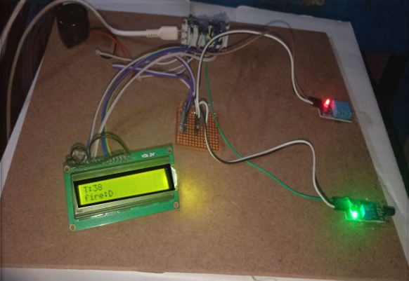
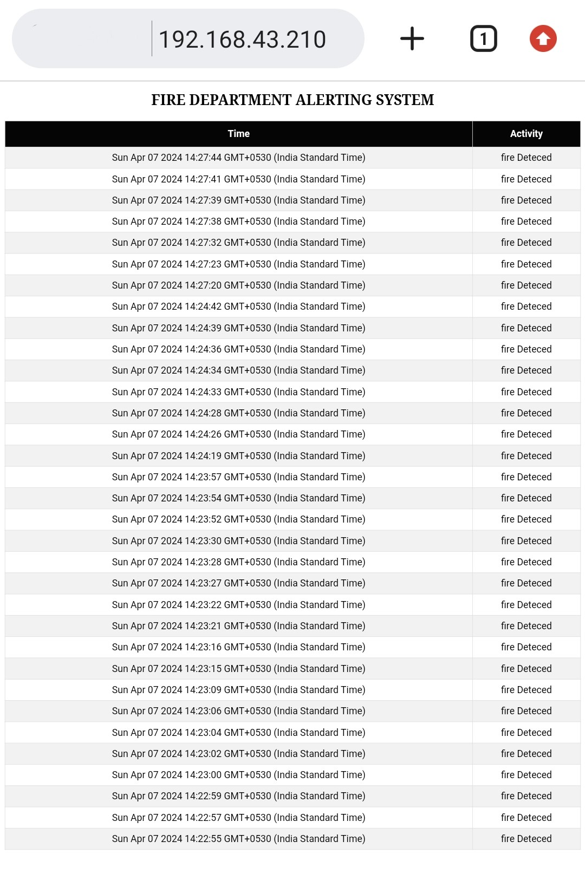

Introduction
Welcome to the project website. This project aims to develop an efficient and automated fire detection and alert system to enhance safety in residential and commercial environments by preventing property damage and saving lives.
Hardware
- ESP8266 (NodeMCU)
- Temperature Sensor (DHT-11)
- Flame Sensor
- LCD Display (16x2)
- Buzzer
- Power Supply
Software
- Arduino IDE for Programming ESP8266
Block Diagram
Some Pictures
 Working Process
1. Sensors monitor designated areas for fire incidents.
2. Node MCU ESP8266 processes sensor data locally.
3. Alerts are displayed on-site via LCD display and buzzer.
4. Real-time fire incident information accessible via a website hosted on ESP8266.
5. Users connect to ESP8266 Wi-Fi network and access the website using its IP address.
6. The system ensures rapid response and proactive fire safety measures with local access.
Coding Tasks
1. Writing the Arduino code to read data from the sensors
2. Implementing the logic to trigger alerts.
3. Developing the web based interface for monitoring data via Wi-Fi.
Output
 Conclusion
This project was a significant learning that allowed us to develop practical skills
in IoT, Team collaboration, and real-time data processing.